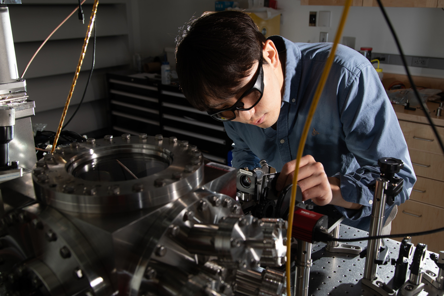

About

I am a fourth-year PhD candidate at MIT, advised by Prof. Vivishek Sudhir. My research focuses on quantum optics, quantum optomechanics, and precision measurements, aiming to explore quantum sensing and metrology, macroscopic quantum phenomena, and the interface between quantum mechanics and gravity. Bridging experiment and theory, my work involves the design and implementation of optical, mechanical, and electronic systems, as well as theoretical studies in quantum physics, stochastic processes, and estimation theory.
Before MIT, I earned B.S. and M.S. degrees in Mechanical Engineering from Tokyo Institute of Technology and the University of Tokyo, respectively. Then, I worked at KAIST as a research associate (and fulfilled military service), advised by Prof. Seung-Woo Kim and Prof. Young-Jin Kim. There, I carried out experiments on frequency combs, time/frequency standards, and precision measurements.